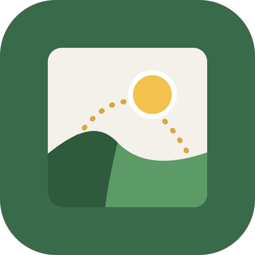

Una familia de apps, una para cada pregunta
Apps para conocer el terreno
Cada app responde a una pregunta concreta sobre el terreno, a partir de datos abiertos.
Ya disponibles
-

Terra Bloc
¿Cómo es este terreno en 3D?
Modelos 3D del relieve para verlos en pantalla o imprimirlos.
Maquetas, docencia, regalos, impresión 3D
-

Terra Rutes
¿Cómo es esta ruta?
Graba tus salidas y sigue tracks sobre el mapa. Abre GPX o KML, mira su perfil y el relieve 3D, únelos y edítalos.
Senderismo, ciclismo, carreras de montaña
-

Terra Parcel·les
¿Dónde están y cómo son mis parcelas?
Guarda las parcelas del Catastro con notas, fotos y etiquetas, agrúpalas en fincas y ábrelas en las otras apps.
Propietarios, agricultores, gestores de fincas
-

Terra Anàlisi
¿Qué pendiente y qué orientación tiene?
Altitud, pendientes, orientaciones y sombreado de una parcela, con estadísticas e informe PDF.
Agricultura, forestal, ingeniería, peritajes
-

Terra Camp
¿Coincide mi parcela con el Catastro?
Mide una parcela sobre el terreno con el GPS del móvil y compárala con la del Catastro.
Propietarios, agricultores, técnicos de campo
En desarrollo
Estas apps aún las estoy terminando. Llegarán a Google Play cuando estén listas.
-

Terra Visibilitat
¿Qué se ve desde aquí?
La cuenca visual de un punto sobre el relieve, con la altura del observador y del objetivo.
Antenas, internet rural, incendios, impacto visual
En desarrollo -

Terra Sol
¿Cuántas horas de sol le dan?
Horas de sol directo de un punto o de una parcela, con la sombra de las montañas, cualquier día del año.
Cultivos, invernaderos, placas solares, casas
En desarrollo -

Terra Reg
¿Llega el agua a todas partes?
Diseña el riego por goteo de una parcela y comprueba si el caudal llega a todos los tramos.
Agricultores, huertos, instaladores de riego
En desarrollo -

Custòdia
¿Cómo gestiono mis fincas?
Registra parcelas rústicas y consulta su Catastro, su pendiente y un índice experimental de riesgo de incendio.
Propietarios rurales, entidades de custodia
En desarrollo
Cómo funcionan
-
Gratuitas, con un Pro de pago único
Cada app se puede usar gratis. Las funciones avanzadas se desbloquean con un solo pago, sin suscripciones.
-
Tus datos no salen del dispositivo
No hay cuentas ni servidor propio. Las zonas, los tracks y las parcelas se guardan solo en tu móvil u ordenador.
-
Datos públicos y abiertos
El relieve y las imágenes vienen del IGN y del Catastro en España, y de fuentes mundiales abiertas en el resto del mundo.
-
Sin instalar nada
Se abren en el navegador y se pueden añadir a la pantalla de inicio. Pronto, también en Google Play.
Software libre, siempre que se puede
Somos partidarios del software libre: usamos herramientas libres, contribuimos a ellas y, siempre que el proyecto lo permite, publicamos el código con licencia libre.
Las apps tienen una versión gratuita para todo el mundo y un Pro de pago único. Es lo que permite que el proyecto se sostenga y siga creciendo, con precios justos y sin suscripciones.